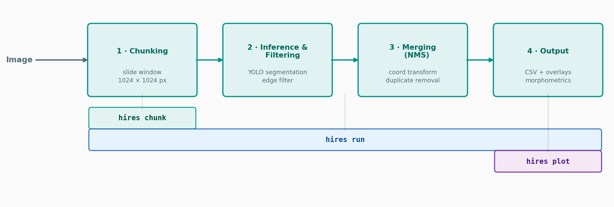

Tiled segmentation¶
High-resolution scans routinely exceed 10,000 × 10,000 pixels. Passing such an image to a segmentation network in one piece is impossible on ordinary hardware, and downscaling it destroys the small objects one wants to measure. HiReS therefore processes the image tile by tile at full resolution and reassembles the result.
This page describes the algorithm and how to choose its parameters. The entry points are
| Function | Use it to |
|---|---|
hires.segment |
Segment one image in one call |
hires.Segmenter |
Segment many images with one loaded model |
hires.run_pipeline |
Segment files and write all outputs to disk |
Overview¶

- Tile. Cut the image into overlapping tiles.
- Predict. Run the model on every tile.
- Filter edges. Discard detections that touch a tile border.
- Merge. Transform the remaining polygons to full-image coordinates.
- Deduplicate. Remove duplicates from overlapping tiles with polygon non-maximum suppression (NMS).
The result is a Collection in full-image normalized
coordinates, ordered by decreasing confidence.
1. Tiling¶
Tiles of size \(T\) are placed every \(T - o\) pixels along each axis, where \(o\) is the overlap, starting at the origin and continuing until the image is covered. An axis of length \(L > T\) therefore receives
tiles, and an axis with \(L \le T\) exactly one. A tile is identified by the pixel coordinates \((x_0, y_0)\) of its top-left corner.
>>> import hires
>>> hires.tiling.tile_grid((2500, 900), tile_size=1024, overlap=150)
[(0, 0), (874, 0), (1748, 0)]
The last tile along an axis usually extends past the image border. The part outside the image is filled with zeros (black), so that every tile has the same size.
2. Prediction¶
Tiles are passed to the model in batches of batch_size. Each tile is
resized by the model to inference_size (the Ultralytics imgsz), and
detections below confidence are dropped by the model itself. Each
detection becomes an Annotation whose polygon is
normalized to the tile.
3. Edge filtering¶
An object that crosses a tile border is seen only partially by that tile, and the model returns a truncated polygon for it. Measuring such a fragment would be wrong. HiReS discards every detection that is not fully contained in the tile shrunk by a margin \(m\) on every side:
in tile-normalized coordinates, with \(m\) = edge_margin (default 0.01, i.e.
about 10 px of a 1024 px tile). This is what
Annotation.within_frame tests.
Discarding is safe because of the overlap: an object dropped from one tile lies fully inside the neighbouring tile, provided it is small enough (see Choosing the overlap).
4. Merging¶
A point \((x, y)\) normalized to a tile of size \((T_w, T_h)\) with corner \((x_0, y_0)\) maps to the full image of size \((W, H)\) as
After merging, the edge filter is applied once more, now to the full image, which removes objects cut by the border of the scan itself and detections in the zero-padded area.
The margin is relative
edge_margin is a fraction of the tile in step 3 and a fraction of the
full image here. With the default of 0.01, objects within 1 % of the
image width or height of the scan border are excluded. Set
edge_margin=0 to keep everything, at the price of keeping fragments.
5. Non-maximum suppression¶
An object inside the overlap region is detected, in full, by two or more
tiles. These duplicates are removed by
Collection.nms:
- Sort the annotations by decreasing confidence; ties are broken in favour of the larger polygon.
- Take the first remaining annotation and keep it.
- Remove every remaining annotation whose polygon IoU with it exceeds
nms_iou. - Repeat from 2.
The intersection-over-union is computed on the polygons, not on their bounding boxes,
and candidate pairs are found with a spatial index (an STR-tree), so the cost grows with the number of overlapping pairs rather than with the square of the number of detections.
In the pipeline NMS is class-agnostic: two detections of the same object with different classes count as duplicates, and the more confident one wins.
Choosing the parameters¶
Choosing the overlap¶
Along one axis, consecutive tiles keep the detections inside windows that overlap by \(o - 2mT\) pixels. An object whose extent along that axis is smaller than this is therefore always fully inside at least one tile:
With the defaults (\(o = 150\), \(m = 0.01\), \(T = 1024\)) objects up to about 130 px are guaranteed to be captured. Larger objects that happen to straddle a tile border are lost.
Rule of thumb
Set overlap to slightly more than the largest object you expect, in
pixels. If large objects go missing in a regular grid pattern, the
overlap is too small.
A larger overlap means more tiles and proportionally more inference time.
Tile size and inference size¶
tile_size is the size of the cut-out in the original image;
inference_size is the size the model sees. Keep them equal to the tile
size the model was trained on, so that objects appear at the scale the model
learned. Setting tile_size larger than inference_size downsamples each
tile: faster, but small objects lose detail.
Confidence¶
A lower confidence finds more objects and more false positives. If you
have ground truth, choose the threshold from the precision-recall curve
rather than by eye; see
Evaluation. To do so, run
the model once with a low threshold and filter afterwards with
filter_confidence.
NMS threshold¶
nms_iou (default 0.7) must be low enough to merge two detections of the
same object from different tiles, which typically overlap almost perfectly,
and high enough not to remove a genuinely different object that overlaps
its neighbour. Lower it if you see doubled outlines; raise it if touching
individuals disappear.
Summary¶
| Parameter | Default | Raise it when | Lower it when |
|---|---|---|---|
tile_size |
1024 | — | Out of memory during inference |
overlap |
150 | Large objects are missed at tile borders | Runs are too slow |
confidence |
0.5 | Too many false positives | Objects are missed |
inference_size |
1024 | Small objects are missed | Out of memory, or too slow |
edge_margin |
0.01 | Truncated fragments survive | Objects near borders are missed |
nms_iou |
0.7 | Touching objects are suppressed | Duplicates survive |
batch_size |
8 | A GPU is under-used | Out of memory |
Reusing a model¶
hires.segment loads the model on every call. For more
than one image, create a Segmenter once:
segmenter = hires.Segmenter("DaphnAI.pt", overlap=300, device="0")
for path in hires.io.find_images("scans/"):
collection = segmenter.segment(path)
collection.to_txt(f"results/{path.stem}.txt")
segmenter.class_names returns the {class_id: label} mapping stored in the
model, and segmenter.parameters() the settings as a plain dict.
Arrays as input¶
segment also accepts an 8-bit BGR array of shape (height, width, 3):
Using another model¶
The model argument may be an already loaded object instead of a path. Any
object works that provides
predict(tiles, conf=..., imgsz=..., device=..., verbose=False), returning one result per tile withmasks.xyn(tile-normalized polygons),boxes.clsandboxes.conf, and- optionally
names, a list or dict of class labels.
This is the interface of ultralytics.YOLO. Passing an object does not
require the yolo extra.
A worked example without a neural network¶
The interface above is small enough to write a toy "model" by hand, which makes the whole pipeline runnable in a few lines and shows what the parameters do. This one outlines every bright blob in a tile:
>>> from types import SimpleNamespace
>>> import numpy as np
>>> import cv2
>>> class BlobModel:
... names = {0: "blob"}
... def predict(self, tiles, conf, imgsz, device, verbose):
... results = []
... for tile in tiles:
... height, width = tile.shape[:2]
... mask = (tile[..., 0] > 128).astype(np.uint8)
... contours, _ = cv2.findContours(
... mask, cv2.RETR_EXTERNAL, cv2.CHAIN_APPROX_SIMPLE
... )
... polygons = [c.reshape(-1, 2) / (width, height) for c in contours]
... boxes = SimpleNamespace(
... cls=np.zeros(len(polygons)), conf=np.full(len(polygons), 0.9)
... )
... masks = SimpleNamespace(xyn=polygons) if polygons else None
... results.append(SimpleNamespace(masks=masks, boxes=boxes))
... return results
The scan is a black 600 × 400 px image with three white squares of 40 px:
>>> scan = np.zeros((400, 600, 3), dtype=np.uint8)
>>> for x, y in [(50, 50), (240, 100), (450, 300)]:
... scan[y : y + 40, x : x + 40] = 255
With 256 px tiles and an overlap of 64 px, the image is covered by six tiles, and all three squares are found exactly once:
>>> import hires
>>> hires.tiling.tile_grid((600, 400), tile_size=256, overlap=64)
[(0, 0), (0, 192), (192, 0), (192, 192), (384, 0), (384, 192)]
>>> found = hires.segment(scan, BlobModel(), tile_size=256, overlap=64)
>>> found
Collection(name=None, n=3, image_size=(600, 400))
>>> sorted(tuple(round(v) for v in a.to_pixels((600, 400)).bounds) for a in found)
[(50, 50, 89, 89), (240, 100, 279, 139), (450, 300, 489, 339)]
The second square spans x = 240…280 and therefore crosses the right border of the first tile (x = 256). That tile sees only a fragment and discards it; the neighbouring tile, which starts at x = 192, sees the square in full.
Now remove the overlap. The tile border at x = 256 still cuts the square, but no other tile contains it completely, and it is lost:
Switching the edge filter off instead keeps the square, but as two separate fragments, which are the two small areas below:
>>> halves = hires.segment(scan, BlobModel(), tile_size=256, overlap=0, edge_margin=0)
>>> len(halves)
4
>>> sorted(int(a.to_pixels((600, 400)).area) for a in halves)
[585, 897, 1520, 1521]
Neither is what you want, which is why the overlap must exceed the size of the largest object.
A Segmenter holds the model and the settings, and is
the object to reuse across images:
>>> segmenter = hires.Segmenter(BlobModel(), tile_size=256, overlap=64)
>>> segmenter.class_names
{0: 'blob'}
>>> segmenter.parameters()["overlap"], segmenter.parameters()["nms_iou"]
(64, 0.7)
>>> segmenter.segment(scan, name="again")
Collection(name='again', n=3, image_size=(600, 400))
Memory¶
The image is decoded completely into memory as an 8-bit, three-channel
array, which takes \(3\,W H\) bytes (about 300 MB for a 10,000 × 10,000 px
scan). Tiles are views into that array, so tiling itself costs almost
nothing. Inference memory is governed by inference_size and batch_size,
not by the size of the scan.
Debugging¶
To see what happens at each stage, pass debug_dir to
Segmenter.segment (or debug=True to
run_pipeline, or --debug on the command line):
| Path | Content |
|---|---|
tiles/{name}_{x}_{y}.png |
Every tile |
tile_labels/{name}_{x}_{y}.txt |
Raw predictions of the tile, before edge filtering |
tile_overlays/{name}_{x}_{y}.png |
Raw predictions drawn on the tile |
{name}_merged.txt |
Edge-filtered detections in full-image coordinates, before NMS |
Compare a tile overlay with the final result to tell whether an object was missed by the model, removed by the edge filter, or suppressed by NMS.
See also¶
- Reference: Segmentation,
hires.tiling - Output files